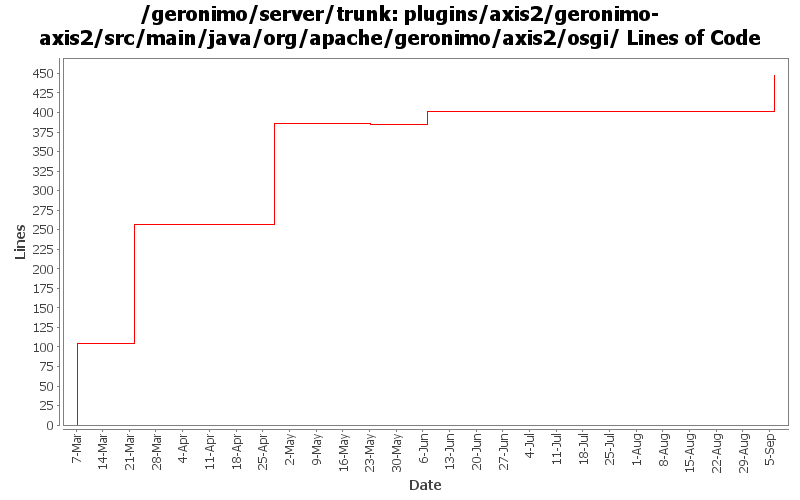

[root]/plugins/axis2/geronimo-axis2/src/main/java/org/apache/geronimo/axis2/osgi

| Author | Changes | Lines of Code | Lines per Change |
|---|---|---|---|
| xuhaihong | 7 (100.0%) | 480 (100.0%) | 68.5 |
GERONIMO-6147
a. Cache the jaxb classes searching result in Axis2 BundleClassFinder - ASF JIRA
b. Come up a quick fix for jaxb class not found while equonix jar urlclassloader is enabled
69 lines of code changed in 1 file:
Be more tolerant while searching availabe binding classes
19 lines of code changed in 1 file:
Use the getBundle to get the associated bundle instance of the taget classloader
5 lines of code changed in 1 file:
Use a registry for WS-Policy builder registry, might need to double check whether CXF also requires this.
129 lines of code changed in 1 file:
1. Enable Axis2 client modules discovery
2. Add GeronimoBundleFinder for runtime JAXB classes discovery
154 lines of code changed in 2 files:
Use BundleListener Axis2ModuleRegistry to configure available Axis2 Modules, while we searched in the classpath in the past
104 lines of code changed in 1 file: